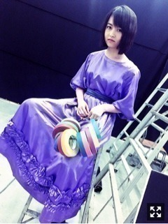
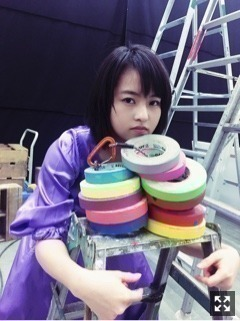

あっという間に5月です。
体調崩さないように気をつけましょう、
気をつけます。
GW楽しんでるかい〜
先日の握手会、欠席してしまい
ご心配ご迷惑おかけしました。
明日からの名古屋二日間
よろしくお願いします！！
3rdアルバム『生まれてから初めて見た夢』
24日リリースです。
ジャケ写公開されました。
乃木坂駅セットにみーんな紫〜

スタッフさんが鞄みたいに
このテープ持ち歩いてて
その感じがとてもイケてる！！
と思って持ってみた
なんか違う
単体で撮ったやつを待ち受け画面にしている

最新号のMdNは
連載2周年記念の振り返り。
改めてお世話になってます。
実は対談の内容で掲載しているところは
だいたい話の4分の1とか5分の1らしいのです。
山戸結希さんとの対談の
全記録の資料もらって振り返って
じっくり読みましたが、だいぶ白熱してた。
みんなにも読んでほしい！
毎度贅沢に時間をいただいて
対談しているのです〜
とても幸せなことです。
気まぐれのヅラ
あ
今月号西村ツチカさんだーーー！
つい最近イラストレーションの特集
買ったばっかりだよ〜
赤ちゃん、まっちゅん、可愛い
まりか